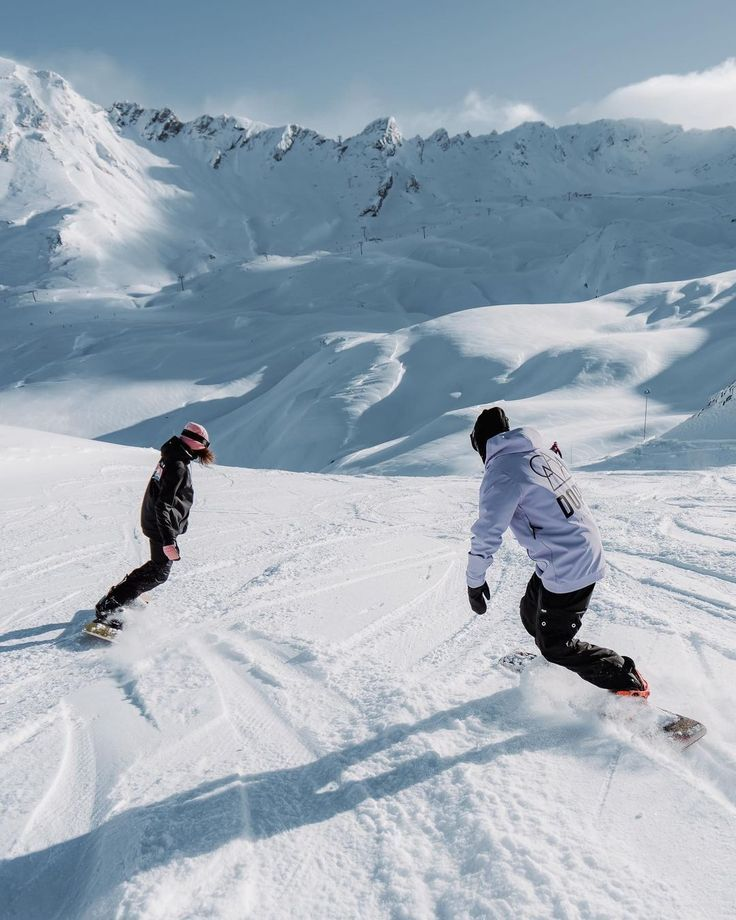
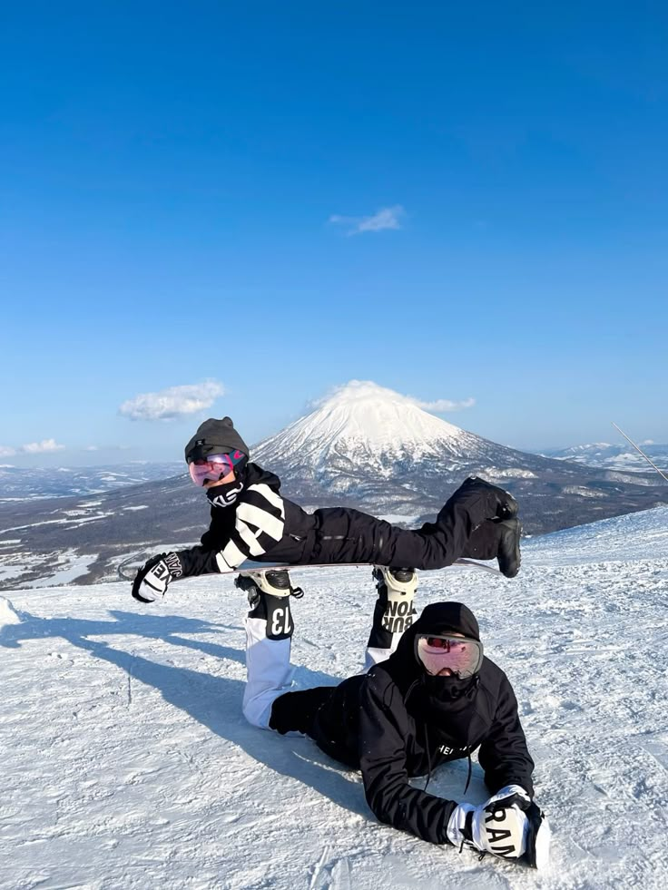

Snowboard/ski
Snowboarding or skiing is a winter sport done on groomed resort slopes or natural mountain terrain during the snowy season. Beginners typically start on gentle “green” runs with a short lesson to learn balance, turning, and stopping. You can rent the essentials—board or skis, boots, helmet, and poles (for skiing)—so you don’t need to buy gear right away. Clothing is about staying warm and dry, waterproof jacket and pants, insulating layers, gloves, and goggles. A typical day includes a lift ticket (or beginner package), equipment rental, and time on easy slopes with breaks for rest and hydration. Resorts often have dedicated learning areas, magic carpets, and group or private lessons. Safety focuses on helmets, controlled speed, and following posted signs. After a few sessions, most people can link turns comfortably and choose whether to progress to longer runs, terrain parks, or simply enjoy relaxed cruising with friends.
Learn More
I have been wanting to try snowboarding or ski but haven’t had the chance to try it. My country doesn’t have snow, and New York doesn’t have a nearby snow hill—or at least we need to drive really far to snowboard or ski. I also heard that snowboarding/skiing requires buying a lot of outfit and safety items or rent it for high price. I haven’t done it might also be because I don’t have a friend who wants to try it yet, or maybe I’m just too lazy to think about it. Another reason is a Chinese drama that tells a story about snowboarding a lot; it makes me want it more and more.